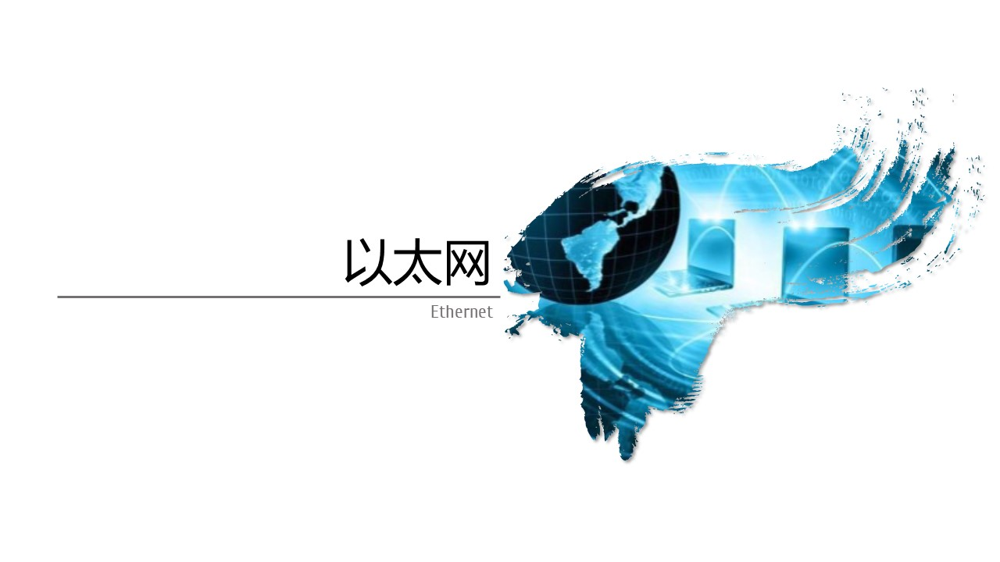
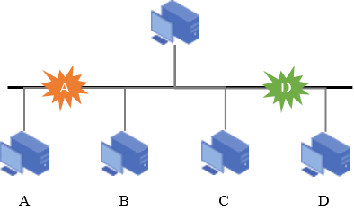

- 以太网标准 Standard
- DIX Ethernet标准：由施乐Xerox公司创建，并联合Inter，DEC共同发布基带总线局域网标准
- 以历史上发现电磁波的以太Ether命名
- 1982年发布的第2个版本DIX Ethernet
- V2是世界上第一个互联网产品的规约。数据传输率达到10Mbps
- IEEE 802.3 标准：802委员会1983年发布的第一个以太网标准，数据速率达到10Mbps
- 通常说的以太网指的是符合DIX Ethernet V2标准的局域网
- 常见以太网 Type
- 10BASE - T以太网 - 传统以太网
- 100BASE - T以太网 - 快速以太网
- 吉比特以太网 - 主流以太网
- 10吉比特以太网
- 以太网特点 Feature
- 可扩展
- 灵活性大
- 易于安装
- 稳健性高
以太网已经成了局域网的同义词
- 共享信道 Sharing
- 计算机通过一根总线链接在一起 - 共享信道
- 每个主机发送数据时，会引起线电压发送变化，每个主机都可以检测到这个数据 - 广播
- 除了广播，还希望实现点对点通信；使用唯一的地址标识 - MAC地址
- 某个用户通信的时，随机接入信道，不需要事先建立链接
- 通过判断目标MAC地址是否匹配实现通信
- 但是同时只能有一个主机通信，否则就会产生冲突

共享信道带来的冲突